Project 5: Fun With Diffusion
Name: Alexander Waldman
Part A: The Power of Diffusion Models!
Part 0: Play with the Model using Your Own Text Prompts!
seed value = 123
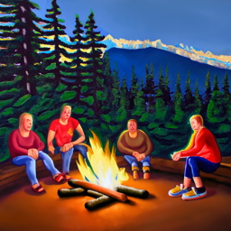
an oil painting of people around a campfire
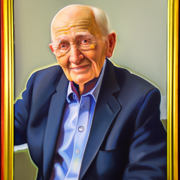
an oil painting of an old man
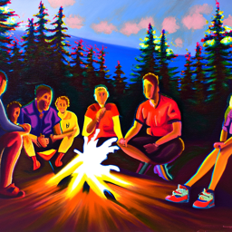
num_inference_steps = 40
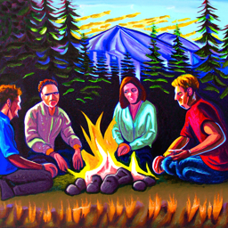
num_inference_steps = 80
Part 1: Sampling Loops
1.1 Implementing the Forward Process

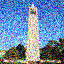
Noisy Campanile at t=250
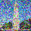
Noisy Campanile at t=500
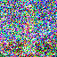
Noisy Campanile at t=750
1.2 Classical Denoising
kernel size = 5

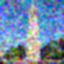
Gaussian Blur Denoising at t=500
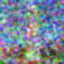
Gaussian Blur Denoising at t=750
1.3 One-Step Denoising
1.4 Iterative Denoising
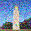
Noisy Campanile at t=240
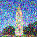
Noisy Campanile at t=390
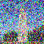
Noisy Campanile at t=540
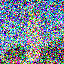
Noisy Campanile at t=690
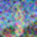
Gaussian Blurred Campanile
1.5 Diffusion Model Sampling
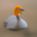
Sample 5